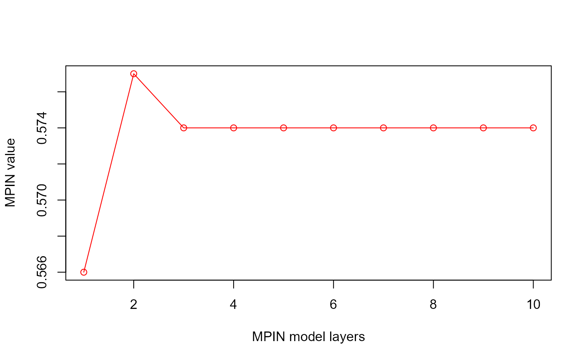
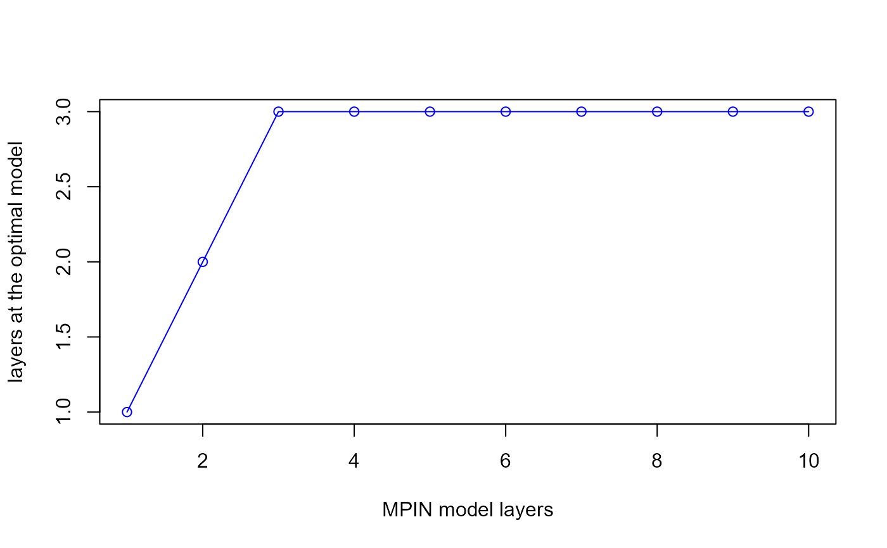

Estimates the multilayer probability of informed trading
(MPIN) using an Expectation Conditional Maximization algorithm, as in
Ghachem and Ersan (2022a)
.
Arguments
- data
A dataframe with 2 variables: the first corresponds to buyer-initiated trades (buys), and the second corresponds to seller-initiated trades (sells).
- layers
An integer referring to the assumed number of information layers in the data. If the argument
layersis given, then the ECM algorithm will use the number of layers provided. Iflayersis omitted, the functionmpin_ecm()will simultaneously optimize the number of layers as well as the parameters of theMPINmodel.- xtraclusters
An integer used to divide trading days into
#(1 + layers + xtraclusters)clusters, thereby resulting in#comb((layers + xtraclusters, layers)initial parameter sets in line with Ersan and Alici (2016) , and Ersan (2016) . The default value is4as chosen in Ersan (2016) .- initialsets
A dataframe containing initial parameter sets for estimation of the
MPINmodel. The default value isNULL. IfinitialsetsisNULL, the initial parameter sets are provided by the functioninitials_mpin().- ...
Additional arguments passed on to the function
mpin_ecm. The recognized arguments arehyperparams, andis_parallel.hyperparamsis a list containing the hyperparameters of the ECM algorithm. When not empty, it contains one or more of the following elements:minalpha,maxeval,tolerance,criterion, andmaxlayers. More about these elements are in the details section.is_parallelis a logical variable that specifies whether the computation is performed using parallel or sequential processing. The default value isFALSE. For more details, please refer to the vignette 'Parallel processing' in the package, or online.
- verbose
(
logical) a binary variable that determines whether detailed information about the steps of the estimation of the MPIN model is displayed. No output is produced whenverboseis set toFALSE. The default value isTRUE.
Details
The argument 'data' should be a numeric dataframe, and contain
at least two variables. Only the first two variables will be considered:
The first variable is assumed to correspond to the total number of
buyer-initiated trades, while the second variable is assumed to
correspond to the total number of seller-initiated trades. Each row or
observation correspond to a trading day. NA values will be ignored.
The initial parameters for the expectation-conditional maximization
algorithm are computed using the function initials_mpin() with
default settings. The factorization of the MPIN likelihood function
used is developed by Ersan (2016)
, and
is implemented in fact_mpin().
The argument hyperparams contains the hyperparameters of the ECM algorithm.
It is either empty or contains one or more of the following elements:
minalpha(numeric) It stands for the minimum share of days belonging to a given layer, i.e., layers falling below this threshold are removed during the iteration, and the model is estimated with a lower number of layers. When missing,minalphatakes the default value of0.001.maxeval: (integer) It stands for maximum number of iterations of the ECM algorithm for each initial parameter set. When missing,maxevaltakes the default value of100.tolerance(numeric) The ECM algorithm is stopped when the (relative) change of log-likelihood is smaller than tolerance. When missing,tolerancetakes the default value of0.001.criterion(character) It is the model selection criterion used to find the optimal estimate for theMPINmodel. It take one of these values"BIC","AIC"and"AWE"; which stand for Bayesian Information Criterion, Akaike Information Criterion and Approximate Weight of Evidence, respectively (Akogul and Erisoglu 2016) . When missing,criteriontakes the default value of"BIC".maxlayers(integer) It is the upper limit of number of layers used for estimation in the ECM algorithm. If the argumentlayersis missing, the ECM algorithm will estimateMPINmodels for all layers in the integer set from1tomaxlayers. When missing,maxlayerstakes the default value of8.maxinit(integer) It is the maximum number of initial sets used for each individual estimation in the ECM algorithm. When missing,maxinittakes the default value of100.
If the argument layers is given, then the Expectation Conditional
Maximization algorithm will use the number of layers provided. If
layers is omitted, the function mpin_ecm() will simultaneously
optimize the number of layers as well as the parameters of the MPIN model.
Practically, the function mpin_ecm() uses the ECM algorithm to optimize
the MPIN model parameters for each number of layers within the integer
set from 1 to 8 (or to maxlayers if specified in the argument
hyperparams); and returns the optimal model with the lowest Bayesian
information criterion (BIC) (or the lowest information criterion
criterion if specified in the argument hyperparams).
References
Akogul S, Erisoglu M (2016).
“A comparison of information criteria in clustering based on mixture of multivariate normal distributions.”
Mathematical and Computational Applications, 21(3), 34.
Ersan O (2016).
“Multilayer Probability of Informed Trading.”
Available at SSRN 2874420.
Ersan O, Alici A (2016).
“An unbiased computation methodology for estimating the probability of informed trading (PIN).”
Journal of International Financial Markets, Institutions and Money, 43, 74--94.
ISSN 10424431.
Ghachem M, Ersan O (2022a).
“Estimation of the probability of informed trading models via an expectation-conditional maximization algorithm.”
Available at SSRN 4117952.
Examples
# There is a preloaded quarterly dataset called 'dailytrades' with 60
# observations. Each observation corresponds to a day and contains the
# total number of buyer-initiated trades ('B') and seller-initiated
# trades ('S') on that day. To know more, type ?dailytrades
xdata <- dailytrades
# Estimate the MPIN model using the expectation-conditional maximization
# (ECM) algorithm.
# ------------------------------------------------------------------------ #
# Estimate the MPIN model, assuming that there exists 2 information layers #
# in the dataset #
# ------------------------------------------------------------------------ #
estimate <- mpin_ecm(xdata, layers = 2, verbose = FALSE)
# Show the estimation output
show(estimate)
#> ----------------------------------
#> MPIN estimation completed successfully
#> ----------------------------------
#> Likelihood factorization: Ersan (2016)
#> Estimation Algorithm : Expectation Conditional Maximization
#> Initial parameter sets : Ersan (2016), Ersan and Alici (2016)
#> Info. layers in the data: provided by the user
#> Selection criterion : Bayes Information Criterion (BIC)
#> ----------------------------------
#> 15 initial set(s) are used for the 'current' estimation
#> Type object@initialsets to see the initial parameter sets used.
#>
#>
#> MPIN model Regular Estimation Sequential
#>
#> =============== =========================
#> Variables Estimates
#> =============== =========================
#> alpha 0.266667, 0.483333
#> delta 0.312500, 0.034483
#> mu 677.91, 1512.36
#> eps.b 331.07
#> eps.s 338.2
#> ----
#> Likelihood (800.379)
#> mpin(j) 0.114341, 0.462343
#> mpin 0.576684
#> ----
#> AIC | BIC | AWE 1616.76, 1633.51, 1690.27
#> =============== =========================
#>
#> -------
#> Running time: 0.686 seconds
# Display the optimal parameters from the Expectation Conditional
# Maximization algorithm
show(estimate@parameters)
#> $alpha
#> layer.1 layer.2
#> 0.2666667 0.4833333
#>
#> $delta
#> layer.1 layer.2
#> 0.31250000 0.03448276
#>
#> $mu
#> layer.1 layer.2
#> 677.9121 1512.3621
#>
#> $eps.b
#> [1] 331.0696
#>
#> $eps.s
#> [1] 338.2034
#>
# Display the global multilayer probability of informed trading
show(estimate@mpin)
#> [1] 0.576684
# Display the multilayer probability of informed trading per layer
show(estimate@mpinJ)
#> layer.1 layer.2
#> 0.1143414 0.4623426
# Display the first five rows of the initial parameter sets used in the
# expectation-conditional maximization estimation
show(round(head(estimate@initialsets, 5), 4))
#> alpha.1 alpha.2 delta.1 delta.2 mu.1 mu.2 eps.b eps.s
#> 1 0.1167 0.6333 0.2857 0.1053 561.0181 1333.507 336.1429 336.1852
#> 2 0.2167 0.5333 0.2308 0.0938 599.4843 1462.722 336.1429 336.1852
#> 3 0.2667 0.4833 0.3125 0.0345 674.2034 1510.798 336.1429 336.1852
#> 4 0.3333 0.4167 0.2500 0.0400 828.8212 1520.959 336.1429 336.1852
#> 5 0.6500 0.1000 0.1538 0.0001 1156.6703 1581.709 336.1429 336.1852
# ------------------------------------------------------------------------ #
# Omit the argument 'layers', so the ECM algorithm optimizes both the #
# number of layers and the MPIN model parameters. #
# ------------------------------------------------------------------------ #
# \donttest{
estimate <- mpin_ecm(xdata, verbose = FALSE)
# Show the estimation output
show(estimate)
#> ----------------------------------
#> MPIN estimation completed successfully
#> ----------------------------------
#> Likelihood factorization: Ersan (2016)
#> Estimation Algorithm : Expectation Conditional Maximization
#> Initial parameter sets : Ersan (2016), Ersan and Alici (2016)
#> Info. layers detected : using Ghachem and Ersan (2022) [ECM]
#> Selection criterion : Bayes Information Criterion (BIC)
#> ----------------------------------
#> 525 initial set(s) are used for all 8 estimations
#> Type object@models for the estimation results for all models.
#> Type getSummary(object) for a summary of estimates for all models.
#>
#> MPIN model Optimal Estimation Sequential
#>
#> =============== ============================
#> Variables Estimates
#> =============== ============================
#> alpha 0.216667, 0.050000, 0.483333
#> delta 0.230769, 0.666667, 0.034483
#> mu 602.88, 986.45, 1506.84
#> eps.b 336.91
#> eps.s 335.89
#> ----
#> Likelihood (643.458)
#> mpin(j) 0.082619, 0.031196, 0.460648
#> mpin 0.574463
#> ----
#> AIC | BIC | AWE 1308.92, 1331.95, 1409.99
#> =============== ============================
#>
#>
#> Table: Summary of 8 MPIN estimations by ECM algorithm
#>
#> BIC AIC AWE layers #Sets time
#> --------- ------- ------- ------- ------ ----- ----
#> model.1 6473.41 6462.94 6508.88 1 5 0.06
#> model.2 1633.51 1616.76 1690.27 2 15 0.45
#> model.3 1331.95 1308.92 1409.99 3 35 0.9
#> model.4** 1331.95 1308.92 1409.99 3 70 1.85
#> model.5 1331.95 1308.92 1409.99 3 100 2.6
#> model.6 1331.95 1308.92 1409.99 3 100 2.64
#> model.7 1342.58 1313.26 1441.9 4 100 3.27
#> model.8 1342.58 1313.26 1441.9 4 100 3.27
#>
#> -------
#> Running time: 15.04 seconds
# Display the optimal parameters from the estimation of the MPIN model using
# the expectation-conditional maximization (ECM) algorithm
show(estimate@parameters)
#> $alpha
#> layer.1 layer.2 layer.3
#> 0.2166667 0.0500000 0.4833333
#>
#> $delta
#> layer.1 layer.2 layer.3
#> 0.23076923 0.66666667 0.03448276
#>
#> $mu
#> layer.1 layer.2 layer.3
#> 602.8805 986.4454 1506.8365
#>
#> $eps.b
#> [1] 336.9052
#>
#> $eps.s
#> [1] 335.8866
#>
# Display the multilayer probability of informed trading
show(estimate@mpin)
#> [1] 0.5744632
# Display the multilayer probability of informed trading per layer
show(estimate@mpinJ)
#> layer.1 layer.2 layer.3
#> 0.08261897 0.03119604 0.46064817
# Display the first five rows of the initial parameter sets used in the
# expectation-conditional maximization estimation.
show(round(head(estimate@initialsets, 5), 4))
#> alpha.1 alpha.2 alpha.3 alpha.4 delta.1 delta.2 delta.3 delta.4 mu.1
#> 1 0.0500 0.0667 0.1000 0.5333 0.3333 0.2500 0.1667 0.0938 540.0141
#> 2 0.1167 0.1000 0.0500 0.4833 0.2857 0.1667 0.6667 0.0345 561.0181
#> 3 0.2167 0.0500 0.0667 0.4167 0.2308 0.6667 0.0001 0.0400 599.4843
#> 4 0.2667 0.0667 0.1833 0.2333 0.3125 0.0001 0.0909 0.0001 674.2034
#> 5 0.3333 0.1833 0.1333 0.1000 0.2500 0.0909 0.0001 0.0001 828.8212
#> mu.2 mu.3 mu.4 eps.b eps.s
#> 1 576.7712 644.3616 1462.722 336.1429 336.1852
#> 2 644.3616 997.9859 1510.798 336.1429 336.1852
#> 3 997.9859 1447.2923 1520.959 336.1429 336.1852
#> 4 1447.2923 1485.9437 1548.471 336.1429 336.1852
#> 5 1485.9437 1523.5423 1581.709 336.1429 336.1852
# }
# ------------------------------------------------------------------------ #
# Tweak in the hyperparameters of the ECM algorithm #
# ------------------------------------------------------------------------ #
# Create a variable ecm.params containing the hyperparameters of the ECM
# algorithm. This will surely make the ECM algorithm take more time to give
# results
ecm.params <- list(tolerance = 0.0000001)
# If we suspect that the data contains more than eight information layers, we
# can raise the number of models to be estimated to 10 as an example, i.e.,
# maxlayers = 10.
ecm.params$maxlayers <- 10
# We can also choose Approximate Weight of Evidence (AWE) for model
# selection instead of the default Bayesian Information Criterion (BIC)
ecm.params$criterion <- 'AWE'
# We can also increase the maximum number of initial sets to 200, in
# order to obtain higher level of accuracy for models with high number of
# layers. We set the sub-argument 'maxinit' to `200`. Remember that its
# default value is `100`.
ecm.params$maxinit <- 200
# \donttest{
estimate <- mpin_ecm(xdata, xtraclusters = 2, hyperparams = ecm.params,
verbose = FALSE)
# We can change the model selection criterion by calling selectModel()
estimate <- selectModel(estimate, "AIC")
# We get the mpin_ecm estimation results for the MPIN model with 2 layers
# using the slot models. We then show the first five rows of the
# corresponding slot details.
models <- estimate@models
show(round(head(models[[2]]@details, 5), 4))
#> in.layer in.alpha.1 in.alpha.2 in.delta.1 in.delta.2 in.mu.1 in.mu.2
#> set.1 2 0.2167 0.5333 0.2308 0.0938 599.4843 1462.722
#> set.2 2 0.2667 0.4833 0.3125 0.0345 674.2034 1510.798
#> set.3 2 0.6500 0.1000 0.1538 0.0001 1156.6703 1581.709
#> set.4 2 0.0500 0.4833 0.6667 0.0345 1052.7404 1357.863
#> set.5 2 0.4333 0.1000 0.1154 0.0001 1308.9067 1417.445
#> in.eps.b in.eps.s op.layer op.alpha.1 op.alpha.2 op.delta.1 op.delta.2
#> set.1 336.1429 336.1852 2 0.2667 0.4833 0.3125 0.0345
#> set.2 336.1429 336.1852 2 0.2667 0.4833 0.3125 0.0345
#> set.3 336.1429 336.1852 2 0.2667 0.4833 0.3125 0.0345
#> set.4 531.6774 367.4561 2 0.2667 0.4833 0.3125 0.0345
#> set.5 531.6774 367.4561 2 0.2667 0.4833 0.3125 0.0345
#> op.mu.1 op.mu.2 op.eps.b op.eps.s likelihood MPIN
#> set.1 677.9278 1512.384 331.0641 338.2029 -800.3794 0.5767
#> set.2 677.9278 1512.384 331.0641 338.2029 -800.3794 0.5767
#> set.3 677.9278 1512.384 331.0641 338.2029 -800.3794 0.5767
#> set.4 677.9278 1512.384 331.0641 338.2029 -800.3794 0.5767
#> set.5 677.9278 1512.384 331.0641 338.2029 -800.3794 0.5767
# We can also use the function getSummary to get an idea about the change in
# the estimation parameters as a function of the number of layers in the
# MPIN model. The function getSummary returns a dataframe that contains,
# among others, the number of layers of the model, the number of layers in
# the optimal model,the MPIN value, and the values of the different
# information criteria, namely AIC, BIC and AWE.
summary <- getSummary(estimate)
# We can plot the MPIN value and the layers at the optimal model as a
# function of the number of layers to see whether additional layers in the
# model actually contribute to a better precision in the probability of
# informed trading. Remember that the hyperparameter 'minalpha' is
# responsible for dropping layers with "frequency" lower than 'minalpha'.
plot(summary$layers, summary$MPIN,
type = "o", col = "red",
xlab = "MPIN model layers", ylab = "MPIN value"
)

plot(summary$layers, summary$em.layers,
type = "o", col = "blue",
xlab = "MPIN model layers", ylab = "layers at the optimal model"
)

# }